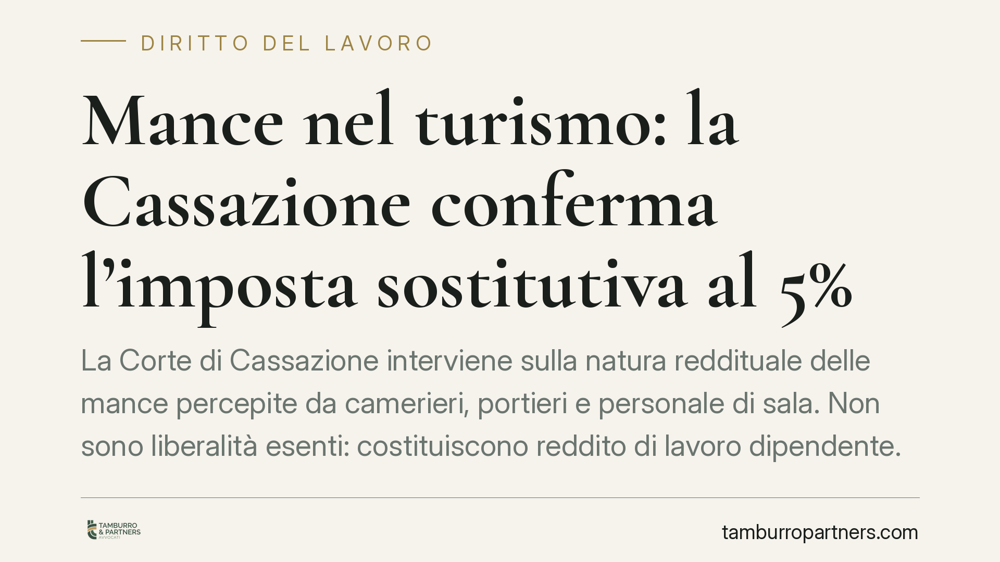

Mance nel turismo: la Cassazione conferma l'imposta sostitutiva al 5%
La Corte di Cassazione interviene sulla natura reddituale delle mance percepite da camerieri, portieri e personale di sala. Non sono liberalità esenti: costituiscono reddito di lavoro dipendente. Si applica l'imposta sostitutiva al 5% introdotta dalla legge di Bilancio 2023, ma solo entro precisi limiti di importo e reddito. Fuori da quei limiti torna la tassazione ordinaria.

Il fatto
La Corte di Cassazione ha affrontato il trattamento fiscale delle mance percepite dal personale del settore turistico-alberghiero e della ristorazione: camerieri, personale di sala, portieri d'albergo.
Il principio affermato è netto: le mance non sono mere liberalità estranee al rapporto di lavoro, ma concorrono a formare il reddito di lavoro dipendente. Vanno quindi assoggettate a imposizione. Questo vale sia per le somme modeste sia per quelle di importo significativo.
Inquadramento normativo
Il regime di riferimento è fissato dalla legge 29 dicembre 2022, n. 197 (legge di Bilancio 2023), art. 1, commi 58-62. La norma qualifica espressamente le mance come redditi di lavoro dipendente e introduce un regime agevolato.
In sintesi, le mance erogate dai clienti — in contanti o con strumenti di pagamento elettronico — sono soggette a un'imposta sostitutiva dell'IRPEF e delle relative addizionali, con aliquota del 5%.
L'agevolazione, però, non è illimitata. Operano due vincoli cumulativi:
- il regime sostitutivo si applica alle mance entro il limite del 25% del reddito percepito nell'anno per le relative prestazioni di lavoro. La parte eccedente concorre al reddito con la tassazione ordinaria progressiva;
- l'accesso è riservato ai lavoratori del settore privato delle strutture ricettive e di somministrazione con un reddito da lavoro dipendente non superiore a 30.000 euro nel periodo d'imposta (salvo verifica di eventuali aggiornamenti successivi).
È quindi scorretto affermare che il 5% si applichi "a prescindere dall'importo": superate le soglie, il trattamento cambia.
Cosa aggiunge la Cassazione
Il contributo della pronuncia va letto rispetto al perimetro temporale. Il regime agevolato opera a partire dalle somme percepite dal 1° gennaio 2023. Per i periodi anteriori all'entrata in vigore della legge n. 197/2022 non esisteva l'imposta sostitutiva: la natura reddituale delle mance andava valutata secondo i principi generali del TUIR in materia di reddito di lavoro dipendente.
La Corte conferma la riconducibilità delle mance al reddito di lavoro dipendente anche sotto il profilo generale, superando la tesi della liberalità esente. È questo il nodo pratico: la somma lasciata dal cliente, pur spontanea, è percepita "in relazione al rapporto di lavoro" e come tale rileva fiscalmente.
> Nota operativa: prima di citare in atti o pareri gli estremi esatti della decisione (numero, sezione e anno), è indispensabile verificarli sulla banca dati ufficiale. Non pubblichiamo riferimenti non confermati.
Implicazioni pratiche
Per il lavoratore. La mancia non è denaro "invisibile". Entro i limiti di legge beneficia di un prelievo contenuto al 5%; oltre, subisce la tassazione ordinaria. Occorre monitorare il cumulo con la retribuzione, perché il superamento della soglia reddituale di 30.000 euro esclude dal regime agevolato.
Per il datore di lavoro. La distinzione tra mance in contanti e mance transitate su POS è decisiva. Le somme che passano dai sistemi di pagamento elettronico gestiti dal datore sono tracciate e, in molti casi, il datore agisce come sostituto d'imposta applicando la ritenuta sostitutiva. Una gestione approssimativa espone a contestazioni su ritenute e adempimenti dichiarativi.
Cosa fare in concreto
- Verificate la soglia reddituale. Controllate se il lavoratore rientra nel limite di 30.000 euro di reddito da lavoro dipendente che condiziona l'accesso al regime al 5%.
- Calcolate il tetto del 25%. Monitorate l'incidenza delle mance sul reddito annuo da prestazioni: la quota eccedente va tassata in via ordinaria.
- Distinguete contanti e POS. Mappate i flussi delle mance elettroniche e definite chi applica la ritenuta, per non lasciare scoperti gli adempimenti del sostituto d'imposta.
- Allineate buste paga e CU. Verificate che le somme agevolate e quelle in tassazione ordinaria siano riportate correttamente nei documenti retributivi e nella Certificazione Unica.
- Documentate il periodo d'imposta. Tenete evidenza separata delle mance per anno, anche in vista di eventuali controlli sui periodi pregressi.
Disclaimer
Contributo informativo a cura di Tamburro & Partners - Avv. Giuseppe Tamburro. Non costituisce parere legale.
Ogni storia di lavoro ha i suoi tempi.
Se gestisci HR e vuoi un confronto su contenzioso, ispezioni o licenziamenti, scrivi allo studio. Ti rispondiamo entro un giorno lavorativo.